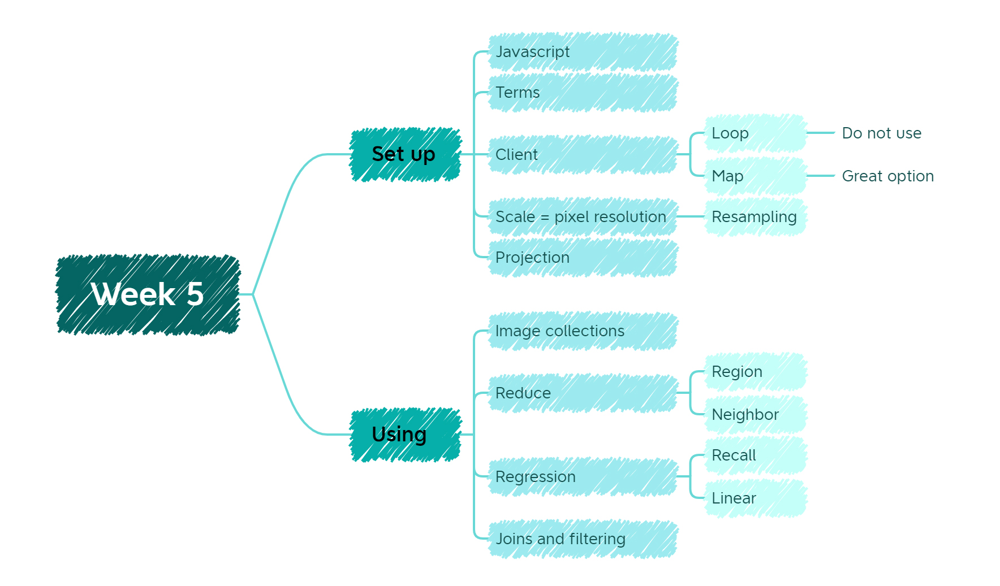
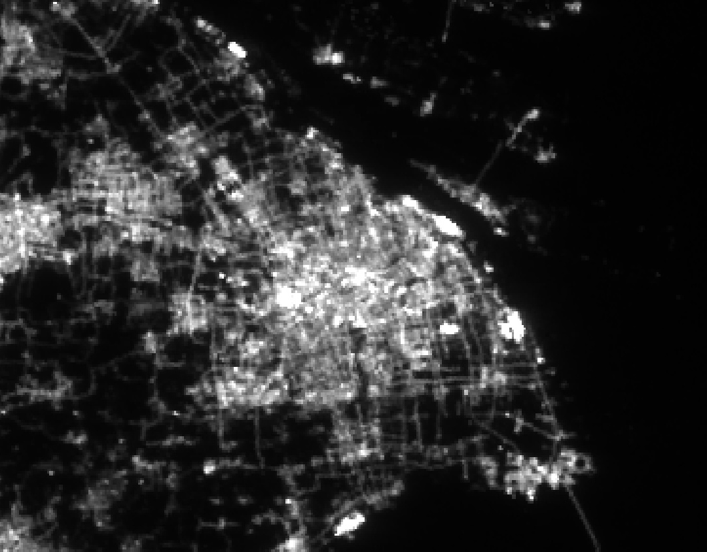

5 Week 5 Google Earth Engine
5.1 Summary

This week we mainly talked about the concepts and way of using of Google Earth Engine(GEE). In the section of concepts, we talked about the some different points of GEE compared to what we learned before. In the section of applying, we focused on some basic operations, such as reducing images, using regression and joining.
So what is GEE? GEE is a “Geospatial” processing service which permits researchers take geospatial analysis at scale. Compared to traditional analysis software, GEE store data on the cloud.
5.1.1 Setup
5.1.1.1 Difference
GEE has special names for some terms we learned before, see Table 5.1 for the details of it
| GEE | R |
|---|---|
| Image | Raster |
| Feature | Vector |
| Image stack | Image Collection |
| Feature stack | Feature Collection |
Different from R we used to use, the language of GEE is Javascript which is a website programming language.
Considering that GEE is cloud computing (i.e. server-side computing), which means if we want to execute some code from sever, we need to take some comments for sever. See Table 5.2 for the details of different of storing.
| Client | Sever |
|---|---|
| Frontend | Backend |
| Collects user input | Process user output |
| Nothing store | store data by .ee () |
Here is a video from YouTube which describe this two concepts’ differences in detail.
5.1.1.2 Caution
Do not use a loop on the sever, because this loop doesn’t know what is in the
.eeobject.Map in the GEE!!
5.1.1.3 Scale
In GEE, pixel resolution is called image scale. During the process of analyzing, GEE will select a closest scale and resample the image.
5.1.1.4 Projection
One of GEE’s strength is that it can convert all data into EPSG:3857 when displayed.
5.2 Application
I just tried night light code from GEE data catalog (a bit blurry, the pixel size is too large) see Figure 5.2.

In practical scenarios, GEE has been used in variety of disciplines(Gorelick et al. 2017). To be specific, Hansen used global Landsat data at a 30-meter resolution in order to find the forest extent, loss and gain from 2000 to 2012(2013). What most inspiring part is that lots of users produce lots of derivative outputs from Hansen’s results by using GEE. For instance, by tracking the the loss of forest, it can help researchers to find the tiger habits(Joshi et al. 2016).
Another example is using GEE’s SimpleCloudScore function to remove cloud to computing GCVI values to help users compute annual yields of maize and soy(Lobell et al. 2015).
5.3 Reflection
Learning a complete new tool is always make me exciting! Through this week’s learning, I’ve got a fundamental understanding and basic way of using of GEE. Compared to R, GEE has more potential to help us to take relevant research(after all it is born to do this work XD). One of its best strength is that it already has lots of data archive(a little bit like repositories on Github), which is pretty helpful for the rookies.
One of my favorite parts of GEE is that it does streamline the process of analyzing. To be specific, it combine map visualization, dataset and coding altogether, which save us lots of time to switch from different software.